April 1966 photo of the first PDP-6 room 914 at the 9th floor of
Technology Square 545 building.
No loudspeakers visible
here.
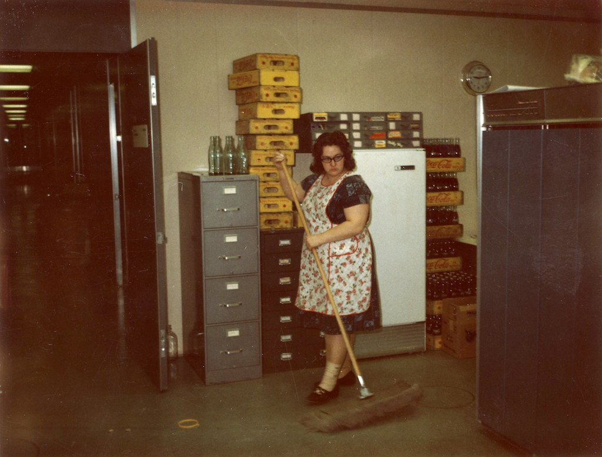
Loudspeakers added.
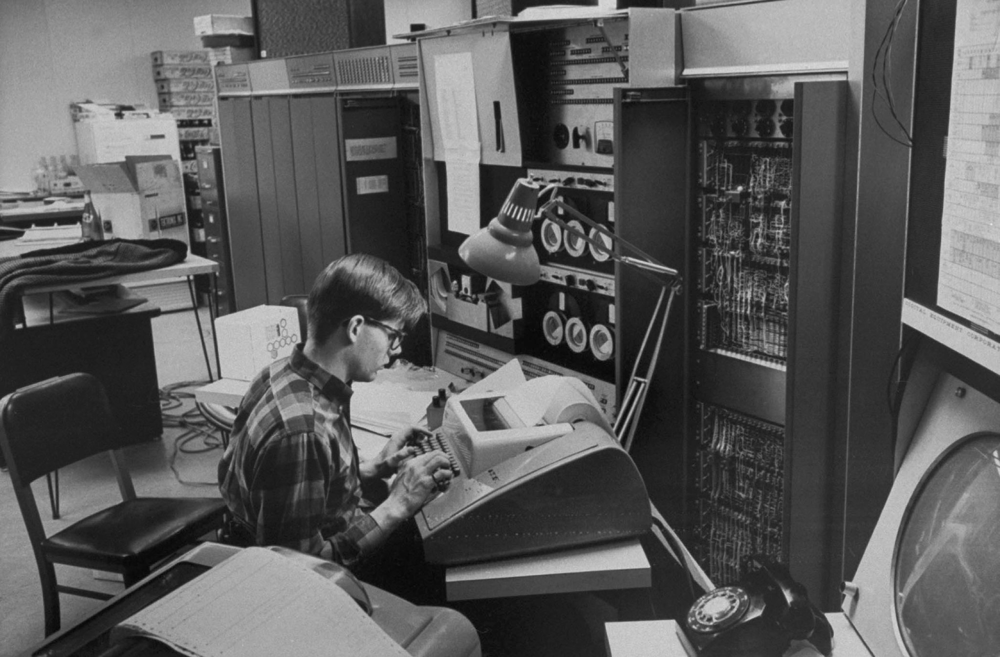
Moby memory added.
MacHack VI playing in a chess tournament, January 1967.
Gosper, Kotok, etc.
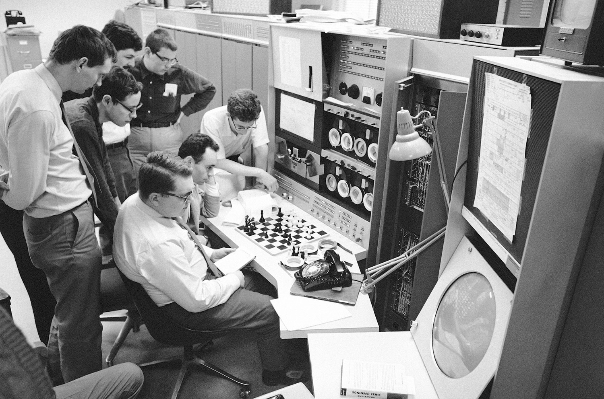
Still the old room 914. Same papers on paper tape panels.
Richard Schroeppel and Michael Speciner.
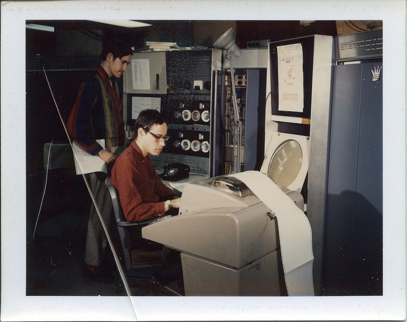
Bill Henneman smoking.
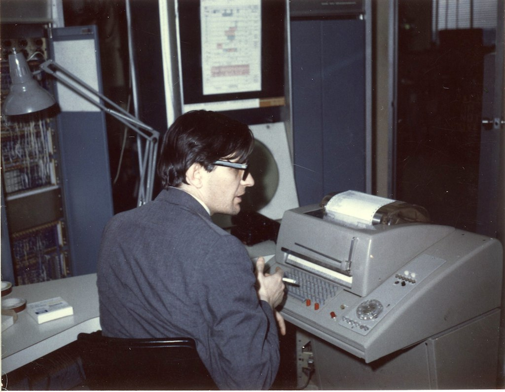
New room with raised floor.
Memory boxes are now in a separate row to the left, not visible here.
David Waltz at the console.
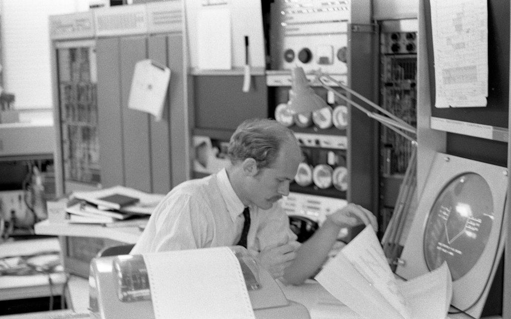
One chess trophy has been added, standing between the speakers.
Photo from Computer Design, October 1967. Caption mistakenly says PDP-8.
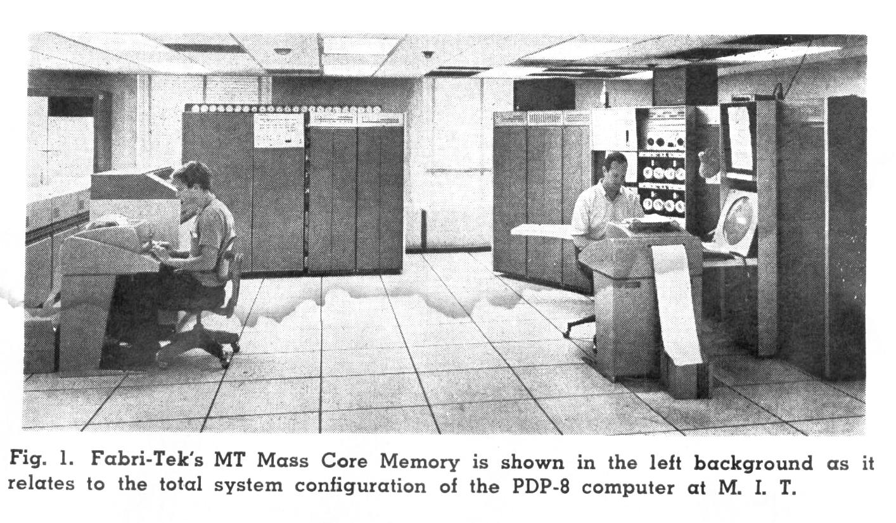
Chess plaque and "NO SMOKING" sign added.
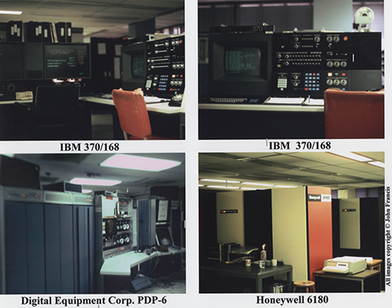
Three pieces of paper. Spacewar console visible.
Richard Fateman.
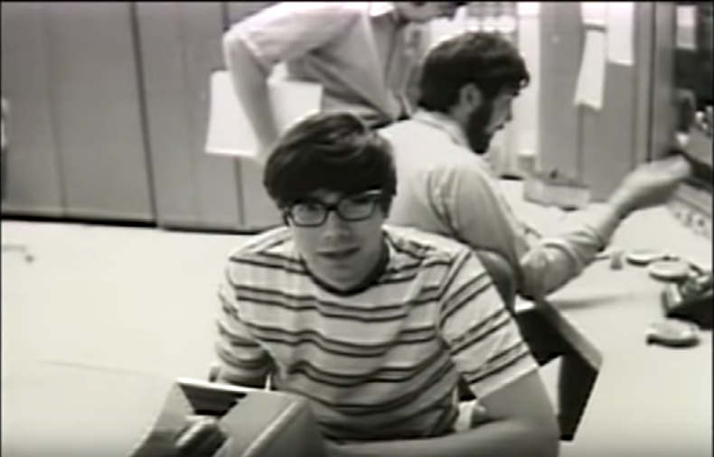
Egyptian cartouche added.
Gerald Sussman, maybe editing an assembly language program in TECO?
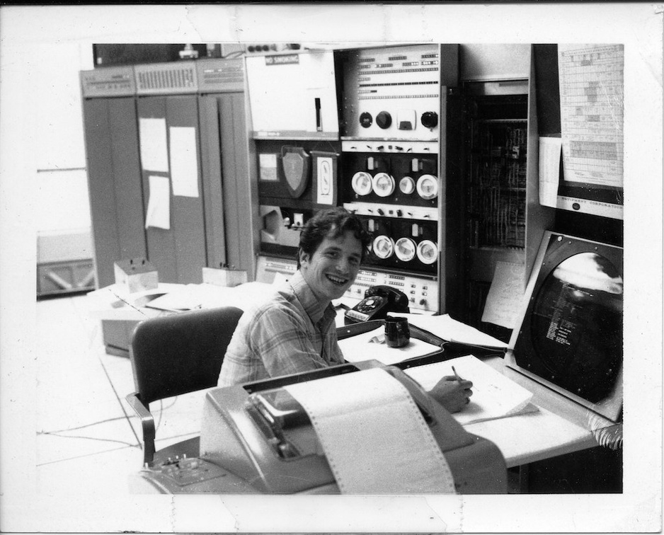
Number of chess trohpies are up to two. To the back row has been added
the Systems Concepts DC-10, DK-10.
Barthold Horn.
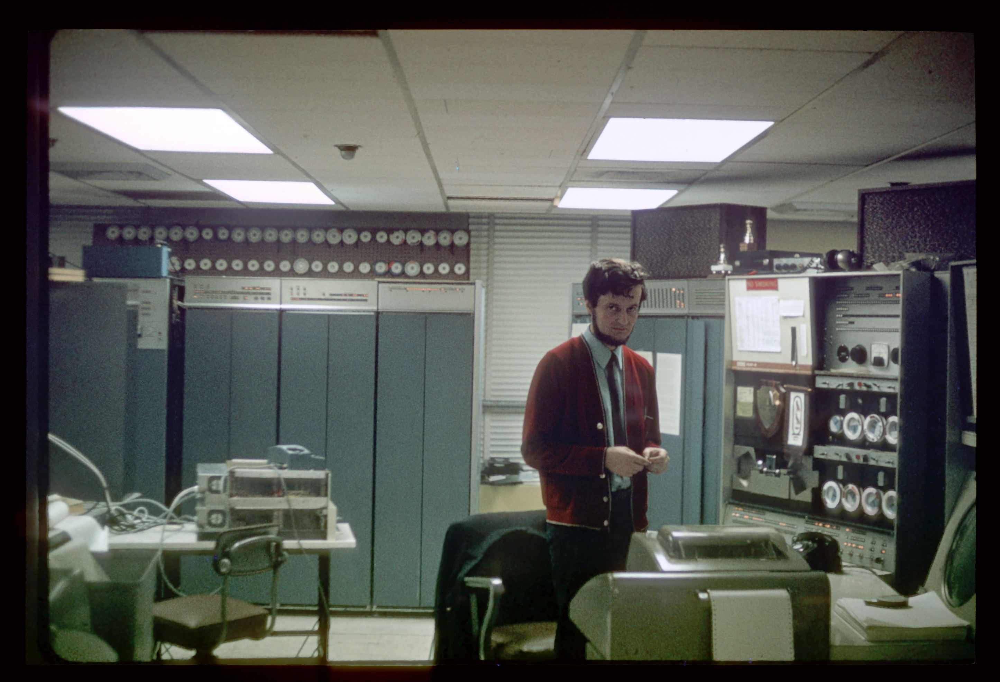
Photo from Harvard Magazine, October 1973.
Michael Speciner; his MLIFE program displaying on the CRT.
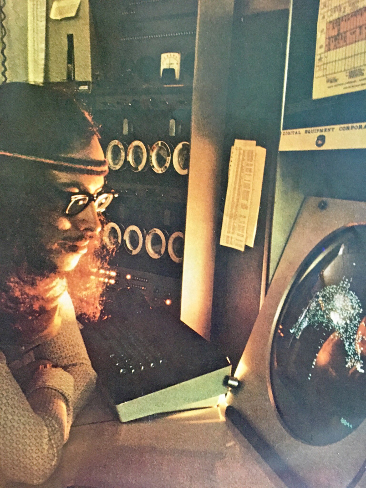
Bill Gosper.
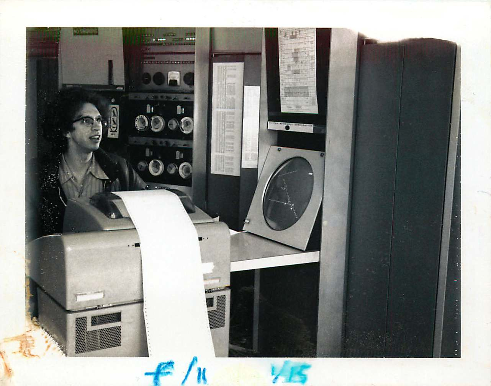
Photo from 1974/75. PDP-6 visible in the background.
Joel Moses and Patrick Winston with GT40.
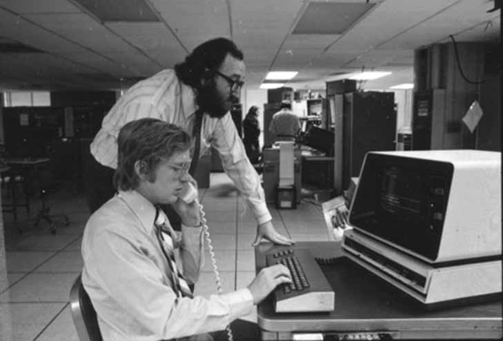
Delivered 6 october 1964, demolished 16 february 1982.
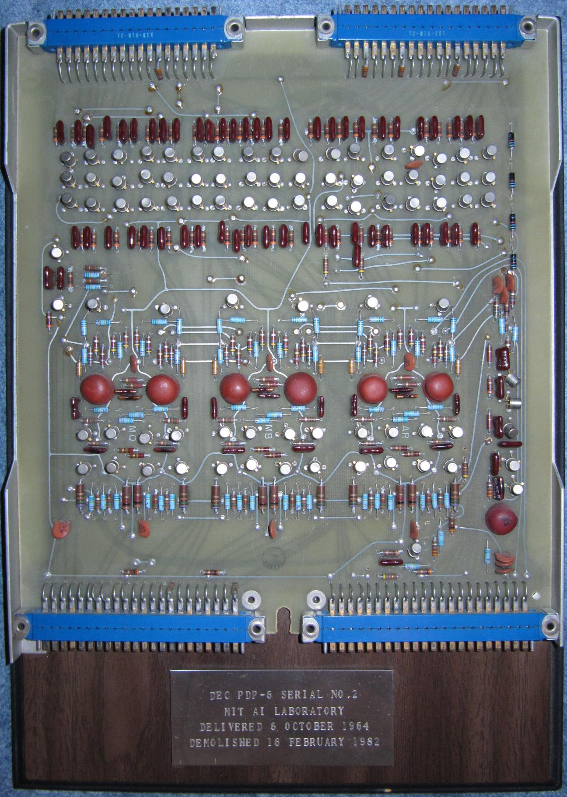